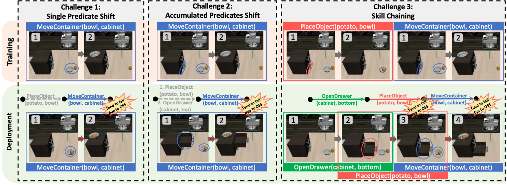
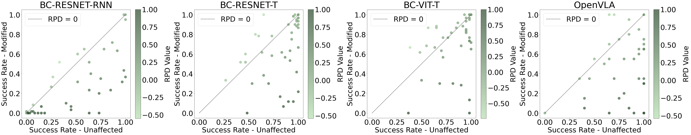
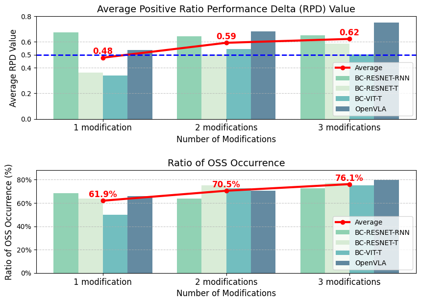
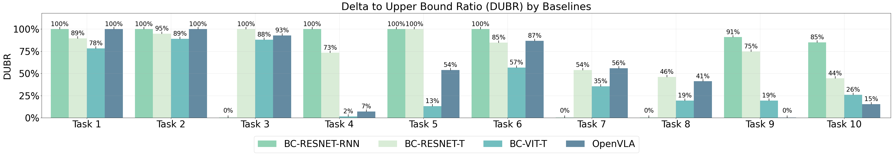
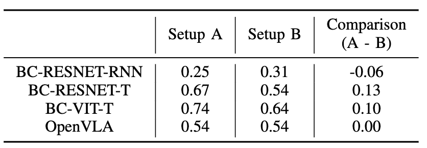

Skill chaining — sequentially executing pre-learned visuomotor skills — is a simple yet powerful way to tackle long-horizon robot tasks. But failures often arise at skill transitions: the terminal state of one skill can fall outside the initial-state distribution the next skill was trained on. Crucially, the culprit is frequently a change that is logically irrelevant to the next skill, yet still appears in its visual observation.
Consider chaining PlaceObject(potato, bowl) with MoveContainer(bowl, cabinet). The second policy was only ever trained on an empty bowl, so the leftover potato creates a visual mismatch that breaks it — even though moving the bowl is still perfectly feasible. We call this Observation Space Shift (OSS).
We model the environment as a POMDP $\langle \mathcal{S}, \mathcal{O}, \mathcal{A}, \mathcal{T}, \mathcal{Z}, r, \gamma \rangle$, where the observation space $\mathcal{O}$ includes third-person camera views and proprioception. Following Task and Motion Planning, a predicate $\psi_i : \mathcal{S} \to \{0, 1\}$ is a binary property of the state (e.g. $\texttt{In(potato, bowl)}$), and an operator $op = \langle \textit{Pre}, \textit{Eff}, c \rangle$ specifies a skill's preconditions, effects, and cost.
A predicate is irrelevant to an operator when $\psi_i \notin \textit{Pre} \cup \textit{Eff}$ — it does not affect feasibility. OSS is the problem in which changes to such irrelevant predicates in the visual observation space $\mathcal{O}$, caused by the effects of preceding skills, degrade the performance of the current visuomotor policy.
Prior skill-transition methods don't address this well: offline transition policies assume each skill's initial states are always reachable (here, that would mean undoing the potato placement, which is logically invalid), while online fine-tuning assumes policies can be continually retrained — impractical when OSS can occur at every transition of a long-horizon task.
BOSS is built on the LIBERO simulator (a Franka Emika Panda arm across 12 manipulation scenes). We start from 44 single-skill tasks drawn from LIBERO-100, then generate modified counterparts with our Rule-based Automatic Modification Generator (RAMG), which edits PDDL predicates — repositioning or adding objects, toggling fixtures (e.g. opening a drawer), and changing containment relations — while preserving each skill's feasibility and logical consistency. RAMG can produce up to 1,727 single-modification variants, giving a large, controllable testbed for OSS.

Tests robustness to a single irrelevant modification introduced by the immediately preceding skill (e.g. a potato placed in the bowl the robot must now move).
Tests the cumulative effect of two or three modifications from multiple preceding skills (e.g. a potato in the bowl and an open drawer), a harder, more realistic scenario.
Evaluates 10 real long-horizon tasks, each a chain of three skills, end-to-end — directly measuring how OSS degrades full-task success.
We evaluate four widely used imitation-learning baselines: three Behavioral Cloning policies from LIBERO (BC-RESNET-RNN, BC-RESNET-T, BC-VIT-T) and the vision-language-action model OpenVLA. For C1/C2 we report the Ratio Performance Delta (RPD) — the relative drop in success rate caused by OSS; for C3 we report the Delta to Upper Bound Ratio (DUBR) — the normalized gap between the chain's actual success and its OSS-free upper bound. All results average over three seeds.



A natural idea is to expose policies to more visual variety during training. We used RAMG to generate 1,727 modified environments and replayed demonstrations to build a new dataset of ~57,000 demonstrations — nearly 30× the original LIBERO data for these 44 tasks. We then compare Setup A (trained on original data) with Setup B (trained on the augmented data), both evaluated on the same modified C1 tasks.

We tested two more intuitive strategies on C1, and neither resolves OSS:
Together with the data-augmentation result, this shows that current baselines lack any mechanism to handle OSS, motivating the need for new, OSS-targeted algorithms.
@article{yang2025boss,
title = {BOSS: A Benchmark for Observation Space Shift in Long-Horizon Task},
author = {Yang, Yue and Zhao, Linfeng and Ding, Mingyu and Bertasius, Gedas and Szafir, Daniel},
journal = {IEEE Robotics and Automation Letters},
year = {2025},
doi = {10.1109/LRA.2025.3585390},
}